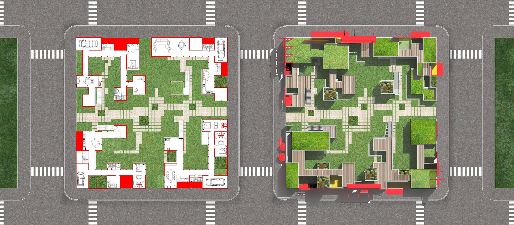
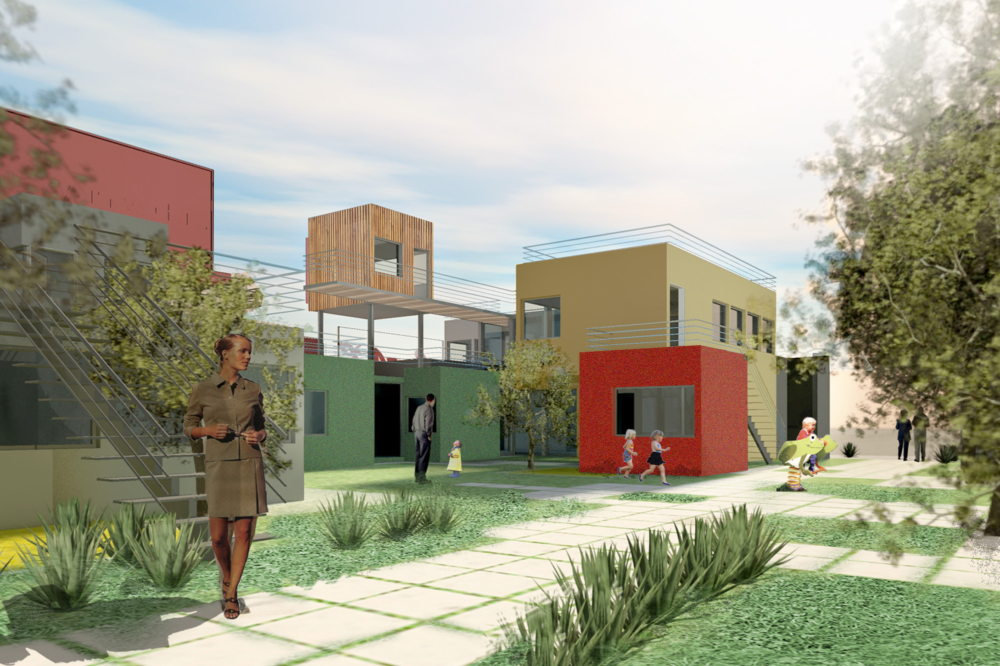

En continuant l'exploration au problème de la grille de neuf carres proposé par John Heduk et en intégrant la notion urbaine de l'espace semi-public et semi-privé le concept de résidence familiale se développe offrant des bâtiments évo-lutifs par l'ajout ou la soustraction de modules.
Imaginez, pour un moment, un nouveau type de maison dans la prospec-tive évolutive familiale. Au Japon on constate que la taille de la plu-part dee maisons en ville sont assez petites; l'organisation spatiale des or-ganes à l'intérieur de la maison se voient axés sur la modularité. dans ce con-texte cette prospective porte ses fruits par l'apparition d'un degré de liberté d'action dans la modularité groupée.
Imaginez, pour un moment, un nouveau type de maison dans la prospec-tive évolutive familiale. Au Japon on constate que la taille de la plu-part dee maisons en ville sont assez petites; l'organisation spatiale des or-ganes à l'intérieur de la maison se voient axés sur la modularité. dans ce con-texte cette prospective porte ses fruits par l'apparition d'un degré de liberté d'action dans la modularité groupée.